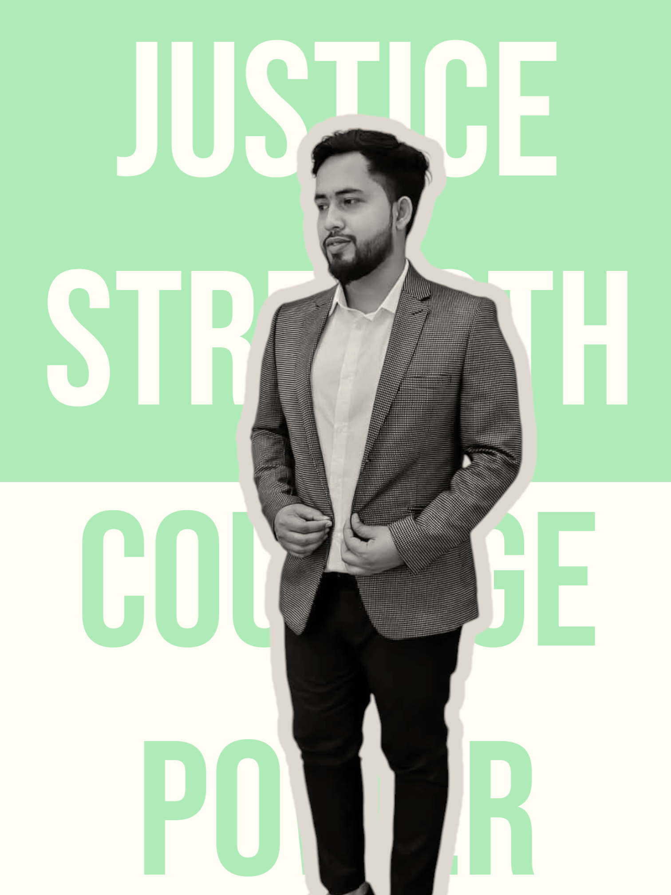

Web Developer | Data Analyst | Creative Thinker
Hello! I’m Efaz, a passionate web developer and data enthusiast based in Bangladesh. I enjoy building clean, functional, and user-friendly websites and exploring insights through data analytics. I recently graduated with a Bachelor of Business Administration, majoring in International Business with a minor in Management Information Systems (MIS), from the School of Business and Entrepreneurship at Independent University, Bangladesh. During my studies, I cultivated skills in business analysis, event management, and digital strategy.
A full research paper analyzing how packaging influences buying decisions, using survey data, SPSS analysis, and academic formatting.
Detailed internship experience in a clearing and forwarding company, focusing on CRM and logistics.
Comparative analysis of SAP, Oracle, and Microsoft Dynamics 365, with visual charts and real-world use cases.
Email: efaz@email.com
LinkedIn: linkedin.com/in/efazefaz
GitHub: github.com/efazefaz